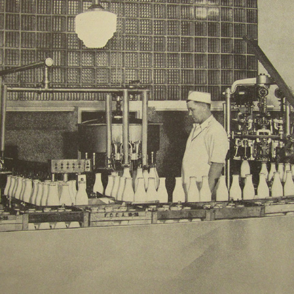

- 2601 E. Franklin Ave., Minneapolis, MN 55406
- OPEN DAILY: 7 a.m. – 10 p.m. (8 a.m. Sat.-Sun.)



From the Past to the Present
In 1919, members of the Milk Wagon Drivers’ Union formed the Franklin Cooperative Creamery. They founded it on the values of cooperation and commonwealth. The Co-op Creamery carries on these values in our support of local farmers and producers and the communities in which we operate.
Hours
Mon.-Fri.: 7 a.m. – 10 p.m.
Sat.-Sun.: 8 a.m. – 10 p.m.
Contact
612-555-5855
or Send Us a Note!
Location
2601 E. Franklin Ave.
Minneapolis, MN 55406